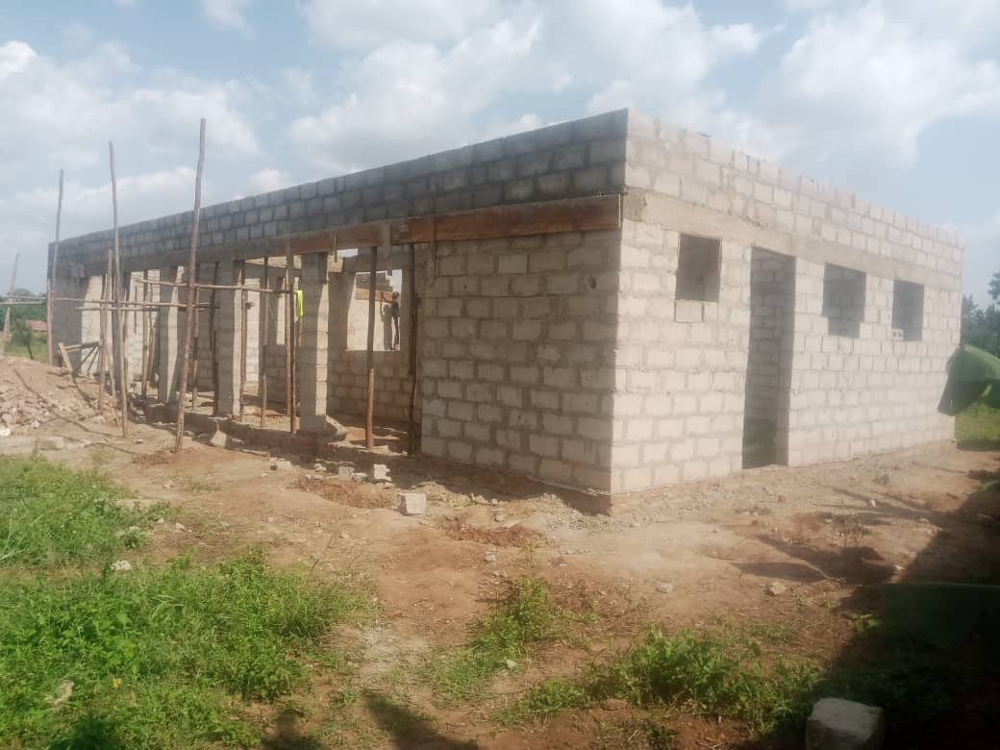
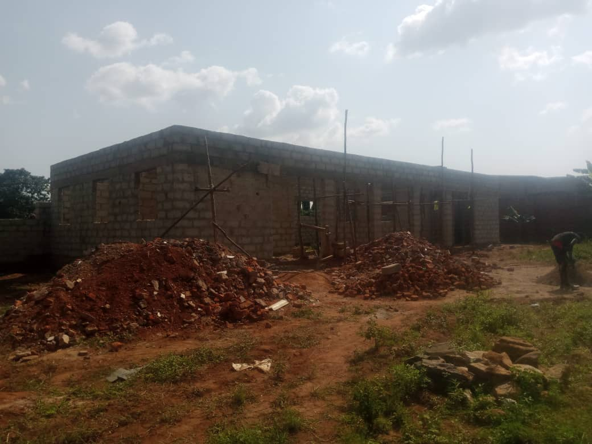

Core Values & Purpose
- Company Goal: Train mothers to become self‑sufficient — producing their own food and earning income through sales.
- Target Group: Mothers (women).
- Ambition: Combat hunger, poverty, and domestic violence by teaching skills that support families with food and income.
Words from Agnes Acom
“When poverty and hunger exist in a family, it leads to problems within the household. A lack of money and food can result in malnutrition and, in extreme cases, domestic violence caused by desperation. By teaching women — especially mothers — how to bake bread, grow vegetables, harvest, and sell, you give them a skill that supports the development of the entire family. When women can provide food, hunger is reduced. When they learn to sell their products, poverty in the household decreases. This makes more food available, especially for the children, and money can be used to pay school fees. By educating mothers in self-sufficiency, we can contribute to more harmonious households, reduce malnutrition, and decrease poverty.”
Ideal Scenario: Weekly Classes
- Bread baking
- Vegetable growing
- Personal financial management
- Extra lessons: Hygiene & nutrition
Financial Model
- Women pay 10,000 UGX per month to attend lessons.
- Women pay a small fee to use the ovens.
Sustainability & Profit Model
- Low contributions cover maintenance and generate income for Agnes (teacher & oven manager).
- Costs are recovered via sale of homemade bread and homegrown vegetables.
Role of Agnes
- Bakes and sells bread to generate personal income.
- Keeps lesson prices low and earns additional income by renting ovens.
Impact on the Women
- Grow vegetables for home use and for sale.
- Use proceeds for personal care and for purchasing baking ingredients.
- Bake bread in Agnes’s ovens (for a low rental fee) and sell independently.
- Hygiene lessons help prevent illness and malnutrition.
Starting Point
- 20 women enrolled.
- Building: Two compartments — Part 1: Bakery (baking & teaching, with chalkboard and tables); Part 2: Small office.
- Agnes owns 2 acres; a house is under construction; much of the land is used for crops.
Products
Vegetables
- Eggplant
- Cabbage
- Tomatoes
- Sukuma wiki
- Sodo (good for malnutrition)
- Beans
- Carrots / Green pepper
Bread
- Loaf
- Sweet
- Salty
- Buns
- Mandazi
Finances
Building quotation
Totals are shown where unit prices were specified in the source document; lines with unknown values are left blank.
| Product | Quantity | Unit | Price each | Total price |
|---|---|---|---|---|
| cement | 40 | units | 30.000 UGX | 1.200.000 UGX |
| fine sand (trips) | 3 | trips | 120.000 UGX | 360.000 UGX |
| roed sand (trips) | 2 | trips | 80.000 UGX | 160.000 UGX |
| aggregates (trips) | 2 | trips | 160.000 UGX | 320.000 UGX |
| maram (trips) | 5 | trips | 80.000 UGX | 400.000 UGX |
| iron sheets | 30 | sheets | 50.000 UGX | 1.500.000 UGX |
| roof ridges | 8 | units | 15.000 UGX | 120.000 UGX |
| hoop iron | 4 | units | 45.000 UGX | 180.000 UGX |
| nails 6 inch (kg) | 15 | kg | 5.000 UGX | 75.000 UGX |
| nails 4 inch (kg) | 20 | kg | 5.000 UGX | 100.000 UGX |
| nails 3 inch (kg) | 8 | kg | 5.000 UGX | 40.000 UGX |
| nails 1.5 inch (kg) | 10 | kg | 6.000 UGX | 60.000 UGX |
| roofing nails | 8 | units | 8.500 UGX | 68.000 UGX |
| timber 6x2 | 24 | pieces | 12.000 UGX | 288.000 UGX |
| timber 4x3 | 8 | pieces | 12.000 UGX | 96.000 UGX |
| timber 4x2 | 50 | pieces | 8.000 UGX | 400.000 UGX |
| timber 3x2 | 50 | pieces | 7.000 UGX | 350.000 UGX |
| faceboard | 8 | pieces | 16.000 UGX | 128.000 UGX |
| rubber washers | 8 | units | 7.000 UGX | 56.000 UGX |
| preservative (20L) | 1 | unit | 24.000 UGX | 24.000 UGX |
| windows | ||||
| door | ||||
| Labour | 1 | lump sum | 2.000.000 UGX | 2.000.000 UGX |
| Buffer | 1 | lump sum | 2.000.000 UGX | 2.000.000 UGX |
| Subtotal (known items) | 9925000 UGX | |||
Start‑up Capital — materials
| Product | Quantity | Price each | Total price |
|---|---|---|---|
| tables | 3 | 180.000 UGX | 540.000 UGX |
| chairs | 10 | 27.000 UGX | 270.000 UGX |
| ovens | 3 | 600.000 UGX | 1.800.000 UGX |
| baking tin (loaf) | 8 | 30.000 UGX | 240.000 UGX |
| baking tins (buns) | 4 | 30.000 UGX | 120.000 UGX |
| baking tins (cakes) | 4 | 30.000 UGX | 120.000 UGX |
| iron tins | 15 | 10.000 UGX | 150.000 UGX |
| spoons | 10 | 5.000 UGX | 50.000 UGX |
| mixer (12L) | 2 | 700.000 UGX | 1.400.000 UGX |
| apron (fabric 1m) | 8 | 15.000 UGX | 120.000 UGX |
| seeds (5 types) | 5 | 25.000 UGX | 125.000 UGX |
| chalkboard | 1 | 250.000 UGX | 250.000 UGX |
| chalk | 5 | 15.000 UGX | 75.000 UGX |
| Buffer | 1 | 2.000.000 UGX | 2.000.000 UGX |
| Total | 7260000 UGX | ||
The original document listed a total of 7,260,000 UGX (~1,750 EUR). Values above are computed from the provided line items.
Location & Construction Progress
Address: OOnyu Road, Plot Nr. 1 — Kumi, Uganda
- Building under construction.
- Large part of land actively used for growing crops.
Monthly Costs
- Ingredients
- Seeds
- Chalk
- Electricity
- Maintenance
- Hygiene supplies
- Staff
Team
Agnes Acom — Owner
- Bakes and sells bread for personal income.
- Teaches: 1x hands‑on bakery class, 1x hands‑on gardening class, 1x theory class (finance & hygiene).
- Performs follow‑ups with home visits.
Call for Support
We’re seeking a partner — a company or individual — to help complete and furnish the bakery and support Agnes to launch operations. Agnes is deeply committed to her community: alongside her work at the hospital, she supports local children through a foundation and offers guidance within the community. A secure, sustainable bakery‑training center will empower mothers, reduce malnutrition and poverty, and foster more peaceful homes.
Images

